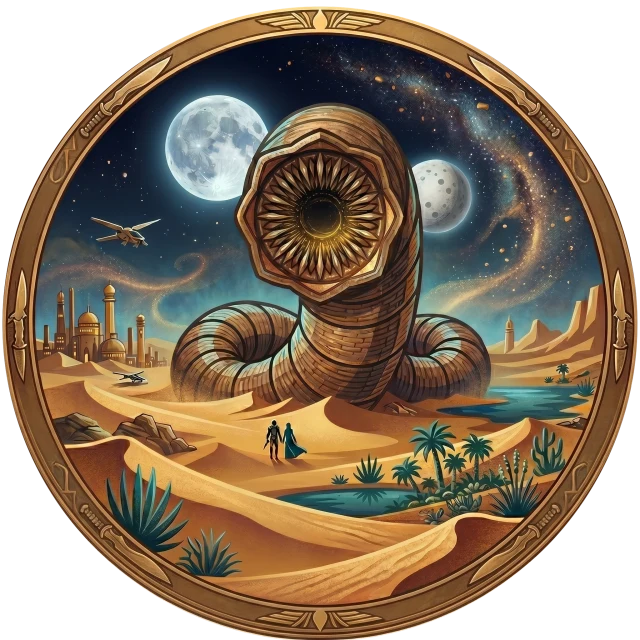
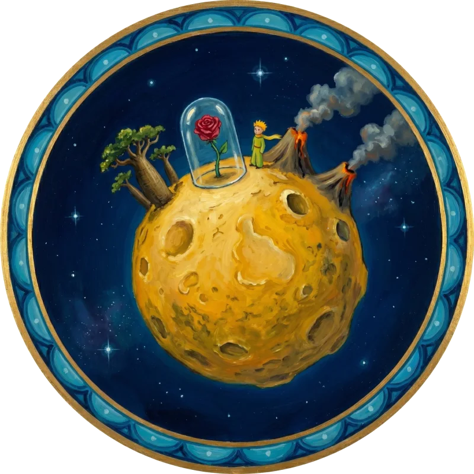

Down the
Rabbit Hole
Eight worldsone line at a time
Eight worldsone line at a time



“So we beat on, boats against the current, borne back ceaselessly into the past.”
Pour a glass“Freedom is the freedom to say that two plus two make four.”
Face the telescreen
“It is only with the heart that one can see rightly.”
Visit the asteroid